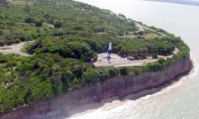
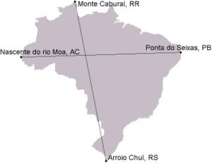

O ponto extremo ao norte do Brasil, o monte caburaí
.jpg)
O monte caburaí é considerado o ponto mais ao norte do Brasil, com 1456 metros de altitude. Ele está localizado no Estado de Roraima, na região da Serra do Caburaí, no município de Uiramutã, que faz divisa com a Guiana Francesa
O ponto mais extremo ao sul do Brasil, o arroio chuí
.jpg)
Localizado no Rio Grande do Sul , o arroio chuí é um curso de água que nasce num pântano no município de Santa Vitória do Palmar.De acordo com o IBGE, as coordenadas do Arroio Chuí são: Latitude: 33° 45'07" S, Longitude: 53° 23'50" O.
O ponto extremo do Brasil ao oeste , a nascente do rio moa

O ponto mais ocidental ou mais a oeste do território brasileiro está situado no município de Mâncio Lima, no estado do Acre, na divisa com o Peru. Trata-se da nascente do rio moa, que fica na serra de Contamana ou serra do Divisor, a uma altitude de 158 metros.
O ponto mais extremo ao leste do Brasil, a ponta dos seixas

A ponta do seixas é o ponto mais oriental do Brasil e das Américas continentais. Está localizada na cidade de João Pessoa, na Paraíba. A ponta do seixas está a 14 km do centro de João Pessoa, suas coordenadas geográficas são: Latitude: 07° 09'18" S. Longitude: 34° 47'35" O
Todos os extremos do Brasil

A distância entre os extremos do Brasil, de norte a sul, é de 4.394,7 quilômetros. Já a distância entre os extremos de leste a oeste é de 4.319,4 quilômetros.